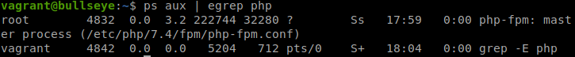
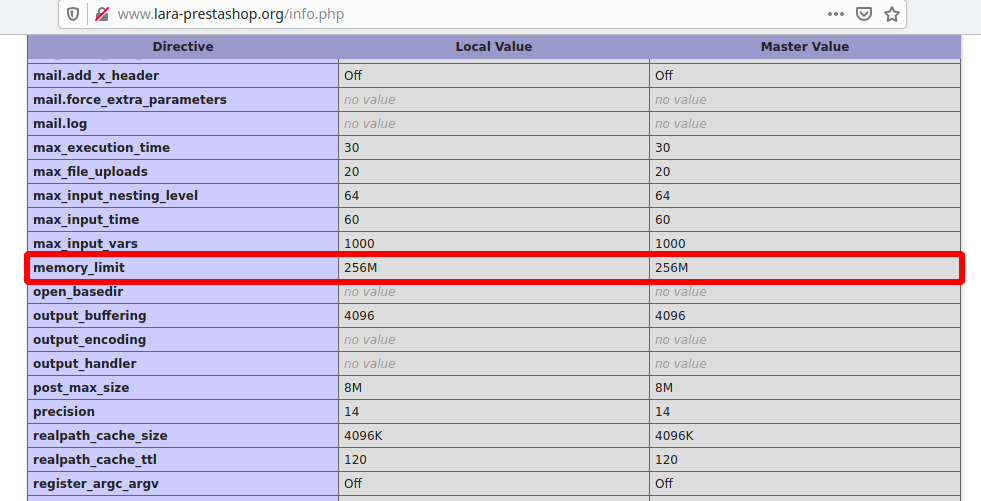

PHP-FPM es una alternativa a PHP FastCGI que incluye características adicionales, especialmente enfocadas a sitios web con mucho tráfico, ya que ofrece un rendimiento mucho mayor.
Siguiendo el escenario que creamos en la Instalación de Joomla y migración a un hosting externo, vamos a configurar Apache para que ejecute el CMS con PHP-FPM.

Instalación de PHP-FPM
Antes que nada, deshabilitaremos el módulo de Apache que permite la ejecución de PHP:
sudo a2dismod php7.4
sudo systemctl restart apache2
Después, instalamos PHP-FPM desde los repositorios:
sudo apt install php-fpm
Si echamos un vistazo a los procesos que se están ejecutando, veremos que ya tenemos PHP-FPM funcionando:

Configuración de Apache2 con PHP-FPM
Apache2 va a funcionar como proxy inverso para la peticiones de los recursos PHP. Cuando solicitamos un fichero PHP, Apache le pasará la petición a PHP-FPM para que lo interprete y luego devuelva la respuesta al servidor web. Para ello, necesitamos activar los siguientes módulos:
sudo a2enmod proxy_fcgi setenvif
sudo systemctl restart apache2
Tenemos a nuestra disposición un fichero de configuración php7.4-fpm en la ruta /etc/apache2/conf-available/. Por defecto, PHP-FPM escucha las peticiones mediante un socket UNIX, que se utiliza cuando PHP-FPM se encuentra en la misma máquina que el servidor web. Si, por el contrario, se encuentra en otra máquina, deberá escuchar por un socket TCP (aunque también se puede utilizar dicho socket si se encuentra en la misma máquina), y por lo tanto hay que cambiar la siguiente línea:
SetHandler "proxy:unix:/run/php/php7.4-fpm.sock|fcgi://localhost"
Por esta:
SetHandler "proxy:fcgi://127.0.0.1:9000"
Por último activamos la configuración:
sudo a2enconf php7.4-fpm
Cambiar la escucha de PHP_FPM al socket TCP
Hemos configurado Apache para que envíe las peticiones PHP por el socket TCP, pero también es necesario indicarle al propio PHP-FPM que escuche por ahí, por lo que editamos el directorio /etc/php/7.4/fpm/pool.d/www.conf y cambiamos la siguiente línea:
listen = /run/php/php7.4-fpm.sock
Por esta:
listen = 127.0.0.1:9000
Modificar el límite de memoria
PHP-FPM nos permite limitar la memoria a nuestro gusto. Para ello, editamos el fichero /etc/php/7.4/fpm/php.ini y cambiamos el valor del parámetro memory_limit:
Al reiniciar el servicio de PHP-FPM y acceder a la página info.php, veremos el cambio:
